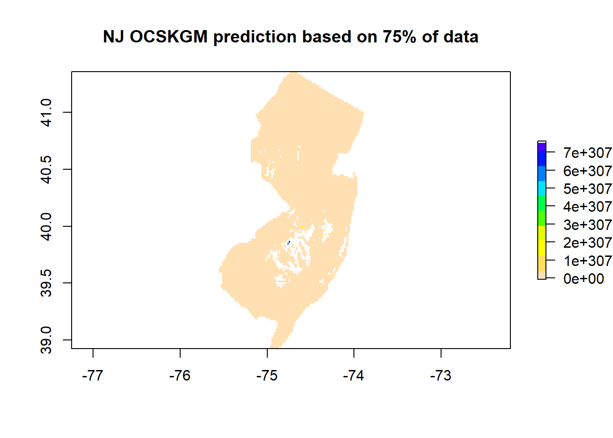

Chapter 7 Random-Forest
7.1 Modeling Approach
Random forest is a machine learning algorithm method that is popular in DSM for uncovering the statistical relationship between a dependent variable (e.g., soil carbon stocks) and its predictors (covariates or independent variables). RF has proven to be efficient at mapping soil properties across a wide range of data scenarios and scales of soil variability. This Chapter is devoted to machine learning algorithm applied to SOC mapping using the Rapid Carbon Assessment Project (RCAP) dataset for New Jersey.
7.2 Data preparation
We previously prepared the point dataset “nj.SOC” in chapter 5. We will be using this data file in this section.
Environmental predictors (covariates).
In the Chapter 4, we presented and prepared several global and climatic datasets. In addition to these datasets, numerous covariate layers have been prepared
```{r setup, include=FALSE}
# explore the data structure
nj.SOC <- read.csv("C/../LOCATION/File_Name.csv")
# Read in covariates
files <- list.files(Directory, pattern = '.tif$', full.names = TRUE)
covs <- stack(files)
```## 'data.frame': 188 obs. of 26 variables:
## $ X.1 : int 1 2 3 4 5 6 7 8 9 10 ...
## $ id : chr "C1201C061" "C1201C062" "C1201C063" "C1201C064" ...
## $ X : num -75 -75 -75 -75 -75 ...
## $ Y : num 41 41 41 41 41 ...
## $ SOC : num 90 58.4 39.7 67.2 55.3 ...
## $ CRFVOL : num 9.34 3.97 4.84 6.97 5.97 ...
## $ OCSKGM : num 4.5 4.07 3.68 4.21 4.01 ...
## $ annualPET : num 1009 1009 1009 1009 1009 ...
## $ aridityIndexThornthwaite: num 28.4 28.4 28.4 28.4 28.4 ...
## $ climaticMoistureIndex : num 0.0128 0.0128 0.0128 0.0128 0.0128 ...
## $ continentality : num 25.2 25.2 25.2 25.2 25.2 ...
## $ embergerQ : num 105 105 105 105 105 ...
## $ growingDegDays0 : num 5011 5011 5011 5011 5011 ...
## $ growingDegDays5 : num 3409 3409 3409 3409 3409 ...
## $ maxTempColdest : num 5.07 5.07 5.07 5.07 5.07 ...
## $ meanTempColdest : num 1.2 1.2 1.2 1.2 1.2 ...
## $ meanTempWarmest : num 26.4 26.4 26.4 26.4 26.4 ...
## $ minTempWarmest : num 21.5 21.5 21.5 21.5 21.5 ...
## $ monthCountByTemp10 : int 7 7 7 7 7 7 7 7 7 7 ...
## $ PETColdestQuarter : num 24.9 24.9 24.9 24.9 24.9 ...
## $ PETDriestQuarter : num 36.8 36.8 36.8 36.8 36.8 ...
## $ PETseasonality : num 5257 5257 5257 5257 5257 ...
## $ PETWarmestQuarter : num 151 151 151 151 151 ...
## $ PETWettestQuarter : num 148 148 148 148 148 ...
## $ thermicityIndex : num 238 238 238 238 238 ...
## $ optional : logi TRUE TRUE TRUE TRUE TRUE TRUE ...## [1] "SpatialPointsDataFrame"
## attr(,"package")
## [1] "sp"nj.SOC@proj4string <- CRS(projargs = "+proj=longlat +datum=WGS84")
# Get the covariates names
library(raster)
covs <- stack(files)
names(covs) ## [1] "annualPET" "aridityIndexThornthwaite"
## [3] "climaticMoistureIndex" "continentality"
## [5] "embergerQ" "growingDegDays0"
## [7] "growingDegDays5" "maxTempColdest"
## [9] "meanTempColdest" "meanTempWarmest"
## [11] "minTempWarmest" "monthCountByTemp10"
## [13] "PETColdestQuarter" "PETDriestQuarter"
## [15] "PETseasonality" "PETWarmestQuarter"
## [17] "PETWettestQuarter" "thermicityIndex"7.3 define a model formula
fm = as.formula(paste("OCSKGM ~", paste0(names(covs), collapse = "+")))
# Default 10-fold cross-validation
ctrl <- trainControl(method = "cv", savePred=T)
# Run the model
rfmodel <- train(fm, data = nj.SOC@data, method = "rf", trControl = ctrl, importance=TRUE) 7.4 Using modified Maps to show the Spatial distribution of the SOC stocks across NJ
7.4.1 tMap
tm_shape(pred) + tm_raster(palette = hcl.colors(20, "RdYlGn"), title="NJ SOC stocks (t/ha)",
legend.hist = TRUE, legend.hist.title = "Distribution of colors across pixels") +
tm_legend(outside = TRUE, hist.width = 1) + tm_compass(position = c("left", "bottom")) +
tm_scale_bar(position = c("right", "bottom"), width = NA) + tm_graticules(col = "black") +
tm_xlab("X") + tm_ylab("Y") +# tm_shape(dat) + tm_dots(size=0.2) +
tm_layout(frame.lwd = 3, main.title = "NJ SOC stocks", title.size = 1.5,
title.position = c("right", "top"), legend.outside=TRUE,
legend.title.size = 1,legend.text.size = 1) 7.4.2 tMap view mode
7.4.3 With the sampling location
tm_shape(pred) + tm_raster(palette = hcl.colors(20, "RdYlGn"), title="NJ SOC stocks (t/ha)",
legend.hist = TRUE, legend.hist.title = "Distribution of colors across pixels") +
tm_legend(outside = TRUE, hist.width = 1) + tm_compass(position = c("right", "top")) +
tm_scale_bar(position = c("right", "bottom"), width = NA) +
tm_graticules(col = "black") + tm_xlab("X") + tm_ylab("Y") + tm_shape(nj.SOC) + tm_dots(size=0.2) +
tm_layout(frame.lwd = 3, main.title = "NJ SOC stocks", title.size = 1.5,
title.position = c("right", "top"), legend.outside=TRUE,
legend.title.size = 1, legend.text.size = 1) 7.5 Using GGPLOT2
ggplot() + geom_raster(data = data, aes(x = x, y = y, fill = layer)) + theme_bw() +
coord_sf(expand = TRUE, crs = 4326, label_graticule = 'NW') +
scale_fill_distiller(type = "seq", palette = "RdYlBu", na.value = "grey99", name = "NJ SOC (t/ha)") +
ggspatial::annotation_scale(width_hint = 0.5, location = "br") +
ggspatial::annotation_north_arrow(which_north = "true", location = "br",
height = unit(.8, "cm"), width = unit(.3, "cm"),
pad_x = unit(0.5, "cm"), pad_y = unit(0.8, "cm"),
style = north_arrow_orienteering(text_size = 10))7.6 With modified color pallett
ggplot() + geom_raster(data = data, aes(x = x, y = y, fill = layer)) + theme_bw() +
theme(panel.ontop=TRUE, panel.background=element_blank(), panel.grid.major = element_line(color = "black"))+
coord_sf(expand = TRUE, crs = 4326, label_graticule = 'NW') +
scale_fill_gradientn(colors = hcl.colors(20, "RdYlGn"), name = "NJ SOC (t/ha)") +
ggspatial::annotation_scale(width_hint = 0.5, location = "br") +
ggspatial::annotation_north_arrow(which_north = "true",
location = "br", height = unit(.8, "cm"), width = unit(.3, "cm"),
pad_x = unit(0.5, "cm"), pad_y = unit(0.8, "cm"), style = north_arrow_orienteering(text_size = 10))
7.7 Using quantile regression forest to estimate uncertainty
# Sensitivity to the dataset
# Start a loop with 10 model realizations
for (i in 1:10){
# We will build 10 models using random samples of 25%
smp_size <- floor(0.25 * nrow(nj.SOC))
train_ind <- sample(seq_len(nrow(nj.SOC)), size = smp_size)
train <- nj.SOC[train_ind, ]
test <- nj.SOC[-train_ind, ]
modn <- train(fm, data=train@data, method = "rf",
trControl = ctrl)
pred <- stack(pred, predict(covs, modn))
test$pred <- extract(pred[[i+1]], test)
# Store the results in a dataframe
validation[i, 1] <- rmse(test$OCSKGM, test$pred)
validation[i, 2] <- cor(test$OCSKGM, test$pred)^2
}#The sensitivity map is the dispersion of all individual models
sensitivity <- calc(pred[[-1]], sd)
plot(sensitivity, col=rev(topo.colors(10)), main='Sensitivity based on 10 realizations using 25% samples')## rmse r2
## Min. :0.6345 Min. :0.1832
## 1st Qu.:0.6790 1st Qu.:0.4183
## Median :0.7401 Median :0.4851
## Mean :0.7504 Mean :0.4589
## 3rd Qu.:0.7996 3rd Qu.:0.5236
## Max. :0.9463 Max. :0.6244# Plot of the map based on 75% of data and the sensitivity to data
# variations
prediction75 <- exp(pred[[1]])
plot(prediction75, main='NJ OCSKGM prediction based on 75% of data', col=rev(topo.colors(10)))
# Train the model with 500 trees
model <- quantregForest(y=log(nj.SOC@data$OCSKGM), x=nj.SOC@data[,8:20], ntree=500,
keep.inbag=TRUE, mtry = as.numeric(modn$bestTune))# Estimate model uncertainty at the pixel level using parallel computing
beginCluster() #define number of cores to use
# Estimate model uncertainty
unc <- clusterR(covs, predict, args=list(model=model,what=sd))
# OCSKGMlog prediction based in all available data
mean <- clusterR(covs, predict, args=list(model=model, what=mean))
# The total uncertainty is the sum of sensitivity and model uncertainty
unc <- unc + sensitivity
# Express the uncertainty in percent (divide by the mean)
Total_unc_Percent <- exp(unc)/exp(mean)
endCluster()# Plot both maps (the predicted OCSKGM + its associated uncertainty)
plot(exp(mean), main='NJ OCSKGM based in all data', col=rev(topo.colors(10)))